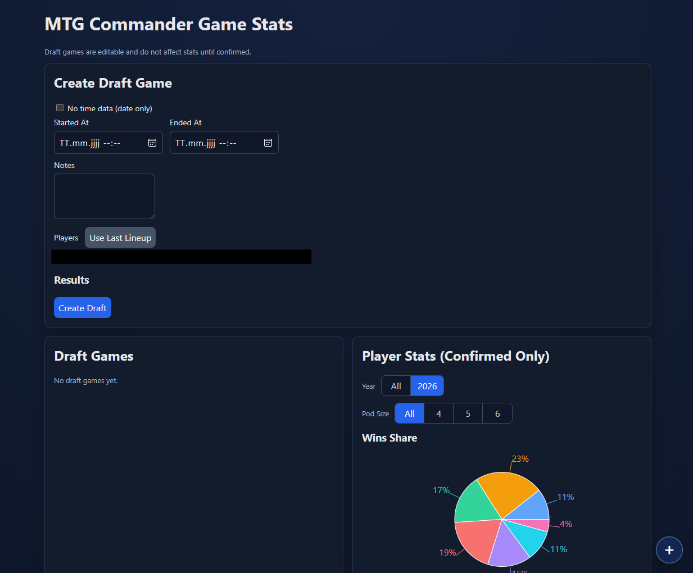

MTG Commander Game Stats
Eine Web-App zum Erfassen und Auswerten von Magic: The Gathering Commander-Partien. Nutzer legen Draft-Games an, pflegen Ergebnisse und sehen ausgewertete Spieler-Statistiken - inklusive Win-Share-Auswertung pro Jahr und Pod-Größe.
Projekt ansehen